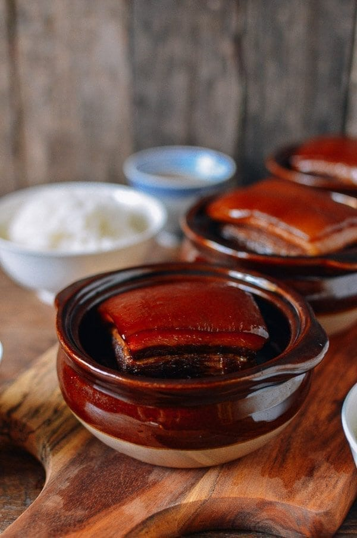

Braised Pork Belly Dong Po Rou

Description
Dong Po Rou is a traditional dish of braised pork belly, supposedly created by Su Dong Po (January 8, 1037 – August 24, 1101), a famous writer and poet. It is a beautiful and incredibly easy dish to make.
Ingredients
- 2 pound slab of pork belly (900g)
- 3 bunches scallions (washed and cut in half lengthwise)
- 8 slices ginger
- 2 cups Shaoxing wine
- 2/3 cup light soy sauce
- 2 1/2 tablespoons dark soy sauce
- 4 - 5 oz. rock sugar
Steps
- Wash the pork belly as a whole piece. Blanch it whole in boiling water for one minute and drain. This process gets rid of any impurities and also allows you to more easily cut the pork belly into same-size pieces. Cut the pork into 3 x 3 inch pieces. You can also make them 2 x 2 inches if you like them smaller. Set aside.
- In a medium clay pot (preferably) or a medium (4-quart) regular pot, lay the scallions on the bottom in a thick, even layer. The scallions should cover the entire bottom of the pot. Space the ginger slices evenly over the scallions.
- Next lay the pork belly skin-side down on top of the ginger and scallions. Pour over the Shaoxing wine, light soy sauce, and dark soy sauce. Add the rock sugar to the pot as well.
- Now cover the pot and place it over medium high heat. Once the liquid in the pot comes to a boil, immediately turn down the heat to low and simmer for 90 minutes. No need to stir.
- Turn the pork belly skin-side up in the pot, cover, and let simmer for another 90 minutes. With the heat at the lowest setting, there should be plenty of liquid in the pot to cook the pork through the entire process––no need to add additional liquid.
- When serving, transfer the pork pieces to a plate. At this point, you can heat the braising liquid in a saucepan to reduce the sauce and drizzle it over the pork.